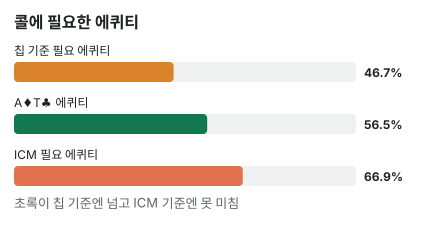

안녕하세요. E10에서 ICM으로 기대 상금을 손으로 구했고, 칩 기준으로 본전인 동전 던지기가 ICM으로는 손해라는 걸 봤죠. I20에서는 BB가 올인을 받을 때 필요 에퀴티를 칩 기준으로 계산했고요.
오늘은 두 계산을 한 판에 나란히 놓아요. 장소는 버블, 한 명만 더 떨어지면 남은 사람이 모두 입상하는 순간이에요. 같은 A♦T♣ 콜이 칩으로는 이득인데 상금으로는 손해가 되는 걸 숫자로 따라가 볼게요.
이 글에서 배울 것
- ICM 필요 에퀴티를 "폴드·이김·짐" 세 기대 상금으로 직접 구하는 법, 그리고 그 식이 왜 그렇게 생겼는지
- 버블에서 칩 기준과 ICM 필요 에퀴티가 얼마나 벌어지는지
- 그 차이를 만드는 게 내 핸드가 아니라 테이블의 스택과 상금 구조라는 것
오늘의 핸드 (조건 고정)
- 4명 남음, 상금 1등 50 · 2등 30 · 3등 20 · 4등 0(예시 단위)
- 블라인드 SB 0.5BB · BB 1BB, 앤티 0
- 스택: BTN 30BB · CO 5BB · SB(상대) 15BB · BB(Hero) 15BB (전체 65BB)
4등은 상금이 없으니, 지금 한 명만 떨어지면 나머지 셋은 입상이에요. 그게 버블이에요.
Hero (BB · 15BB)
프리플랍
CO 폴드 → BTN 폴드 → 상대(SB) 15BB 올인 → Hero는 콜할까?
결론부터 말할게요. 이 조건에서 A♦T♣는 칩 기준으로는 콜이지만, ICM으로는 폴드가 이득입니다. 콜하면 폴드보다 기대 상금이 약 3.98 적어요.
1단계. 칩 기준 필요 에퀴티
Hero는 BB로 이미 1BB를 냈어요. 콜하려면 15 − 1 = 14BB를 더 내면 돼요. 콜하면 팟은 15(상대) + 15(Hero) = 30BB예요.
칩 기준 필요 에퀴티 = 14(더 낼 칩) ÷ 30(콜한 뒤 팟) = 약 46.7%
칩으로 보면 100번 중 47번쯤만 이겨도 본전이에요. 폴드하면 14BB가 남으니 그걸 기준으로 보면, 이기면 30BB가 되어 16BB 늘고, 지면 0이 되어 14BB 줄어요. 따는 쪽이 조금 커요.
2단계. ICM 필요 에퀴티
한 줄 정의
ICM 필요 에퀴티 = 콜해서 이길 때와 질 때의 평균 기대 상금이, 폴드할 때 기대 상금과 같아지는 승률이에요.
비유하면 지면 문 밖으로 쫓겨나는 내기예요. 이기면 상금 몫이 조금 늘고, 지면 그 자리에서 탈락해 0이에요. 잃는 게 훨씬 크면, 훨씬 자주 이겨야 본전이겠죠.
세 경우의 기대 상금
E10 방식으로 네 사람의 스택을 넣어 Hero의 기대 상금을 구해요. BTN 30BB·CO 5BB는 세 경우 모두 그대로예요. 가장 단순한 '이김'만 직접 따라가 볼게요. 상대가 탈락해 3명(Hero 30·BTN 30·CO 5, 합 65)이 남아요.
- Hero 1등 확률 = 30 ÷ 65 = 0.46154
- 2등·3등 확률은 E10처럼 누가 1등이 되느냐로 나눠 세면 0.43407·0.1044
- 0.46154 × 50 + 0.43407 × 30 + 0.1044 × 20 = 약 38.19
폴드(네 명 모두 남음)도 같은 방식으로 한 단계 더 길게 세면 약 25.55가 나와요.
| 경우 | Hero | 상대(SB) | BTN | CO | Hero 기대 상금 |
|---|---|---|---|---|---|
| 폴드 | 15 − 1 = 14 | 15 + 1 = 16 | 30 | 5 | 약 25.55 |
| 콜해서 이김 | 15 + 15 = 30 | 0 (4등) | 30 | 5 | 약 38.19 |
| 콜해서 짐 | 0 (4등) | 30 | 30 | 5 | 0 |
식이 왜 이렇게 생겼나
Hero가 이길 확률을 p라고 하면, 콜의 평균은 p × 이김 + (1 − p) × 짐이에요. 이게 폴드와 같아지는 p를 한 줄씩 풀어 볼게요.
- p × 이김 + (1 − p) × 짐 = 폴드
- p × (이김 − 짐) + 짐 = 폴드
- p × (이김 − 짐) = 폴드 − 짐
- p = (폴드 − 짐) ÷ (이김 − 짐)
ICM 필요 에퀴티 = (폴드 − 짐) ÷ (이김 − 짐)
= (25.55103(폴드) − 0(짐)) ÷ (38.18681(이김) − 0(짐)) = 약 66.9%
분자 (폴드 − 짐)은 콜했다 지면 잃는 몫, 분모 (이김 − 짐)은 이김과 짐의 전체 차이예요. 잃는 몫이 전체 차이에서 차지하는 비율만큼 이겨야 본전이라는 뜻이에요.
칩 기준도 같은 식이에요
이 식에 기대 상금 대신 칩을 넣어 볼게요. 폴드하면 14BB, 이기면 30BB, 지면 0이에요.
(14(폴드) − 0(짐)) ÷ (30(이김) − 0(짐)) = 14 ÷ 30 = 약 46.7%
1단계의 칩 기준 식과 똑같죠. 칩 기준과 ICM은 같은 식이고, 넣는 값(칩이냐 기대 상금이냐)만 달라요. 칩은 14 : 30으로 곧게 늘지만, 기대 상금은 25.55 : 38.19로 휘어서 비율이 달라지는 거예요.
이게 무슨 뜻이냐면
- 이기면: 38.18681 − 25.55103 = 약 12.64 늘어요
- 지면: 25.55103 − 0 = 약 25.55를 다 잃어요
칩으로는 따는 16BB가 잃는 14BB보다 컸는데, 상금으로는 잃는 몫이 따는 몫의 두 배가 넘어요. 그래서 필요 에퀴티가 46.7%에서 66.9%로, 약 20.2%p 더 올라가요. 이 차이를 리스크 프리미엄이라고 하고, E12에서 자세히 다뤄요.
3단계. 상대 올인 범위와 Hero 에퀴티 (가정 레인지 기준)
상대 범위
상대 SB가 이 자리에서 넓게 올인한다고 가정해요: 22+, A2s+, A2o+, K2s+, K7o+, Q8s+, QTo+, J8s+, JTo, T8s+, 98s. Hero 카드를 빼면 391콤보예요.
| 묶음 | 콤보 | A♦T♣ 에퀴티(대략) |
|---|---|---|
| 포켓페어 22~AA | 72 | 22~99에 약 43~47%, TT에 약 30%, JJ~KK에 약 29%, AA에 약 8.5% |
| A가 들어간 핸드 | 141 | A2~A9에 약 64~73%, AT끼리 약 47~50%, AJ~AK에 약 25~27% |
| K가 들어간 핸드 | 112 | 약 55~74% |
| Q가 들어간 핸드 | 36 | 약 55~72% |
| J가 들어간 핸드 | 20 | 약 58~70% |
| T8s·T9s·98s | 10 | 약 58~68% |
| 합계 | 391 | 약 56.5% |
💡 빨리 세는 팁: Hero의 A♦·T♣ 때문에 AA·TT는 3콤보씩, ATo는 A 3장 × T 3장 = 9가지 중 같은 무늬 2가지를 뺀 7콤보예요
A♦T♣는 이 범위 전체에 약 56.5%(프리플랍 몬테카를로)예요. 더 낮은 A와 K·Q·J 하이에는 앞서고, 페어와 더 높은 A에는 뒤져요. AT끼리는 거의 반반이에요(찹이 많아요).
비교
| 기준 | 필요 에퀴티 | A♦T♣ 에퀴티 | 판정 |
|---|---|---|---|
| 칩 기준 | 약 46.7% | 약 56.5% | 콜 |
| ICM | 약 66.9% | 약 56.5% | 폴드 |

올인 콜이라 결과가 바로 나와요.
콜할 때 기대 상금 = 0.56487 × 38.18681 + 0.43513 × 0 = 약 21.57 < 폴드 약 25.55
폴드보다 약 3.98 적어요.
왜 그럴까: 폴드에도 "상금"이 붙어 있어요
칩 기준의 폴드는 0, ICM의 폴드는 25.55
칩 기준에서 폴드는 "이번 판에서 더 잃지 않음", 즉 0으로 봐요. 그래서 콜이 조금만 남아도 콜이에요.
ICM에서 폴드는 0이 아니라 약 25.55짜리 자리예요. Hero는 14BB로 살아남고, 테이블에는 5BB짜리 CO가 있어요. 계산에서는 CO의 칩이 적어 4등으로 뽑힐 확률이 크게 잡혀요. 그만큼 Hero는 4등을 피할 가능성이 크고, 폴드는 그 가능성을 통째로 지키는 선택이에요.
이기는 몫에는 천장이 있어요
이기면 Hero는 30BB로 BTN과 칩 리더 공동 1위가 돼요. 그래도 기대 상금은 약 38.19로, 1등 상금 50까지는 한참 남아요. E10에서 본 것처럼 칩이 늘수록 칩 하나가 올려 주는 상금이 줄어들어서, 폴드 대비 16BB를 더 가져도 상금은 12.64만 늘어요.
반대로 지면 0이에요. 4등 상금이 없으니 바닥이 없어요. 따는 쪽은 천장에 눌리고, 잃는 쪽은 바닥까지 떨어지니 둘의 크기가 크게 벌어진 거예요.
그러니 결정을 바꾼 건 A♦T♣가 아니에요
A♦T♣의 에퀴티 56.5%는 칩 기준이든 ICM이든 같아요. 바뀐 건 기준선이에요. 그리고 그 기준선을 정한 건 Hero 핸드가 아니라 다른 사람들의 스택과 상금 구조예요.
자주 하는 실수
실수 1. "상대 범위에 56.5%면 앞서니까 콜" 앞서는 건 맞아요. 하지만 이 판의 기준선은 50%도, 칩 기준 46.7%도 아니라 66.9%예요. 56.5%로는 한참 모자라요. 버블에서 올인을 받을 때는 "앞서나?"가 아니라 "ICM 기준선을 넘나?"를 물어야 해요.
실수 2. "칩으로 이득이면 길게 보면 이득" 캐시 게임에서는 칩이 곧 돈이라 맞는 말이에요. 토너먼트에서 받는 건 상금이고, 오늘 이 콜은 상금으로 한 번에 약 3.98을 잃는 결정이었어요. 칩 기준의 이득이 상금으로 그대로 옮겨지지 않는다는 게 ICM의 핵심이에요.
실수 3. 폴드했을 때 스택을 15BB로 놓기 Hero는 BB로 1BB를 이미 냈으니, 폴드하면 15BB가 아니라 14BB가 남고 상대는 16BB가 돼요. 칩 기준에서 콜 금액을 14BB로 세는 것과 같은 이유예요. 이걸 15BB로 놓으면 폴드 기대 상금이 달라져, 필요 에퀴티도 틀려요.
"칩 기준으로 이득인데 접으면 손해 아니에요?"
좋은 질문이에요. 칩으로 보면 맞아요. 접으면 칩 기준 이득을 포기하는 거예요.
그런데 이 결정에서 맞바꾸는 걸 정확히 보면 답이 나와요. 접으면 칩 기준의 작은 이득을 포기하는 대신, 콜했을 때 생기는 상금 약 3.98의 손해를 피해요. 토너먼트에서 들고 나가는 건 칩이 아니라 상금이니, 상금 손해를 피하는 쪽이 이득이에요.
숫자가 뒤집히는 지점
이 판의 결론을 움직이는 축은 두 가지예요.
- 상대 올인 범위: 범위가 바뀌면 A♦T♣의 에퀴티가 ICM 필요 에퀴티까지 오는지가 달라져요
- 스택·상금 구조: 폴드할 때 기대 상금과 이길 때 기대 상금의 비율이 달라지면, ICM 필요 에퀴티 자체가 움직여요
선생님의 한마디
버블에서 올인을 받으면 이 순서로 봐요.
- 지면 0인가? 지면 탈락하는 콜이면 칩 기준보다 크게 높여 잡기
- 4등에도 상금이 있나? 짐이 0이 아니면 기준선이 조금 내려와요
- 계산할 시간이 있으면 세 경우 기대 상금으로 기준선을 다시 구하기
연습 문제
홀덤학습 AOF 차트(새틀 프리플랍 차트) → 그외 게임들에서 블라인드 0.5·1, 앤티 없음, 테이블 인원 4명, 자리별 스택, 상금을 넣고 마감 후(ICM) → 포지션 BB → 앞에서 액션한 자리 SB로 맞추면 콜 필요 승률이 ICM·칩 기준으로 나와요. 화면 숫자는 블라인드 압박·실전 보정 때문에 이 글과 달라요. ICM 필요 승률이 칩 기준보다 높게 나오는지만 보세요.
문제 1. 스택과 상대 범위는 그대로인데, 상금이 1등 40 · 2등 30 · 3등 20 · 4등 10으로 바뀌었어요(4등도 입상). Hero의 기대 상금은 폴드 약 25.22, 이김 약 33.57, 짐 10이에요. A♦T♣로 콜할까요?
정답 보기
ICM 필요 에퀴티 = (25.21691 − 10) ÷ (33.57143 − 10) = 15.21691 ÷ 23.57143 = 약 64.6%. A♦T♣ 약 56.5% < 64.6% → 여전히 폴드, 콜하면 폴드보다 약 1.9 적어요. 4등에도 상금이 붙어 "짐"이 0이 아니게 되자 기준선이 66.9%에서 내려왔지만, 이 범위를 상대로는 아직 모자라요.
문제 2. 같은 전체 칩(65BB)인데 5BB짜리 CO가 없어요. BTN 17.5BB · CO 17.5BB · SB 15BB · BB(Hero) 15BB. 기대 상금은 폴드 약 22.67, 이김 약 37.25, 짐 0이에요. Hero가 T♠T♣라면? 이 범위를 상대로 한 T♠T♣의 에퀴티는 약 65.5%예요. 기준선이 처음 장면과 왜 달라졌는지도 한 문장으로 설명해 보세요.
정답 보기
ICM 필요 에퀴티 = 22.66692 ÷ 37.24696 = 약 60.9%. 약 65.5% > 60.9% → 콜(콜이 폴드보다 약 1.73 많음). 처음 장면(66.9%)이었다면 같은 T♠T♣도 폴드예요(콜이 약 0.53 적음). 5BB짜리 CO가 사라지자 폴드의 값이 내려가 기준선도 내려왔어요.
핵심 정리
- ICM 필요 에퀴티 = (폴드 − 짐) ÷ (이김 − 짐), 세 경우의 기대 상금으로 구해요
- 버블에서는 지면 0, 이겨도 천장이 있어서 잃는 몫이 따는 몫보다 훨씬 커요. 오늘 장면에서는 칩 기준보다 약 20.2%p 더 필요했어요
- ICM에서 폴드는 0이 아니라 살아남아 입상할 가능성이 붙은 값이에요
- 기준선을 움직이는 건 내 핸드가 아니라 다른 사람의 스택과 상금 구조예요
정리하며
오늘은 4명이 남은 버블에서 SB 15BB 올인을 받은 A♦T♣의 콜을 두 방식으로 계산했어요.
칩 기준으로는 46.7%만 이기면 되는데, ICM으로는 폴드 약 25.55, 이김 약 38.19, 짐 0을 넣어 66.9%가 필요했어요. A♦T♣의 에퀴티 약 56.5%는 그 사이에 있어서, 칩으로는 콜이고 상금으로는 폴드였죠.
오늘 하나만 가져가면 돼요. 버블에서 올인을 받으면 "폴드해도 내 몫이 얼마 남나"를 먼저 떠올리고, 그 값으로 기준선을 다시 그리세요.
다음 글 E12에서는 오늘 나온 약 20.2%p 차이, 리스크 프리미엄 자체를 들여다봐요. 그 차이가 어디서 오고, 무엇이 커지게 하는지 다뤄요.
AI 작성 · 숫자는 계산 검증 (ICM: 칩 비율로 등수를 차례로 뽑는 방식 · 에퀴티는 프리플랍 몬테카를로) · 가정 레인지 기준 (솔버 결과 아님) · 스택·상금은 이 예시로 고정 · 블라인드 압박·앤티는 넣지 않음 · 올인 콜이라 이번 결정의 최종 결과